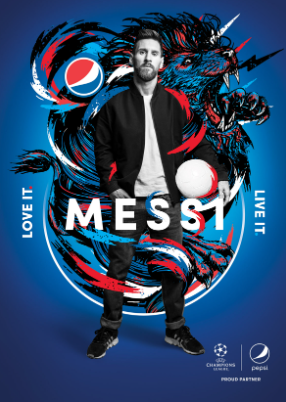

Desde la presencia imparable de Messi y su reinado sobre el terreno de juego hasta el tenaz estilo de juego de Marcelo, cada atleta tiene un atributo único que Pepsi le da vida a través de una serie de retratos audaces en blanco y negro capturados por el reconocido lente Danny Clinch. Las fotografías de Clinch, que capturan el espíritu, el carácter y la energía de cada compañero de equipo de Pepsi, actúan como el lienzo de superposiciones artísticas extremadamente personales creadas por artistas visuales de los países de origen de los atletas. Diego Jiménez (alias DIYE) (Argentina), Bicicleta Sem Freio (Brasil), Dennis Schuster (alias DXTR) (Alemania), Kim Sielbeck (EE. UU.) Y Iain Macarthur (Reino Unido) diseñaron sus propias interpretaciones gráficas de la historia de cada jugador.
Pepsi anuncia su nueva campaña internacional «Thristy For More», con «Nutmeg Royale», un corto protagonizado por los iconos del fútbol Leo Messi, Paul Pogba y Ronaldinho. El estreno de esta campaña se da con motivo de la próxima celebración de la Copa Mundial de Fútbol, en Qatar 2022. Este spot dará inicio a la campaña «Thristy For More» de la marca, la misma celebra la búsqueda de nuevas e inesperadas experiencias. En Nutmeg Royale se pueden vivir las sensaciones del fútbol en una «batalla de caños».